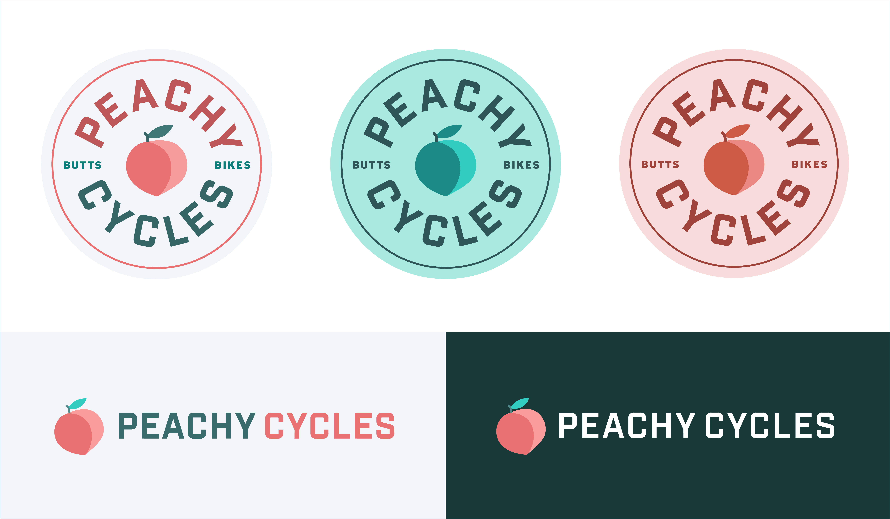

Research and Data Collection
I began working on research ever since I started an internship at a local bike company a few years ago, and then I started building this projeect during the Design Studio class last summer. I read through several articles online about the current cycling scene in the US, and talked with my friends who ride bikes about the barriers that stop women, LGBTQIA, and BIPOC folks from cycling. Based on my own experience, and according to that research and to other people's thoughts, Peachy Cycles was created. You can view the list of resources here.
Why the name 'Peachy Cycles'? Because all butts on bikes! I wanted to bring a goofy fun approach to express positivity and a laid-back welcoming vibe.
Logo Sketches

After lots of iterations, and feedback from the class, I updated the logo and created the brand identity:

User Testing
Then, to come up with the website sections or features, I did user some user-interviews and user-testing with a few people from my network and with folks from cycling groups in the country. I asked them what features they would like to see in Peachy Cycles, and what do current cycling websites lack? What would make biking more accessible?
Feedback Highlights
- Most users want to have the ability to connect with other cyclists.
- Folks are interested in connecting with bike shops and in finding cycling groups to join that are beginner-friendly.
- The majority of folks would love to learn how to fix their own bike. Creating maintenance workshops specifically for women, LGBTQIA+ and BIPOC would be ideal.
- Riders are interested in having safety resources accessible, as well as cycling tips.
- Social media presence will enhance connectivity
Questions and Thoughts Toward a Solution
How can this platform reach a diverse group of people?
What bike shops need to be contacted for workshops?
How can people get involved in this project?
Process and Tools
This project has been a work in progress over the last year. Lots of research and user-interviews were made to figure out the problems and solutions. This platforn was built
Summary
This platform provides riders with resources and knowdlege of bike safety, maintenance, fitting, routes and more. It is community-focused, where everyone gets involved to create workshops, host group ride events and offer their expertise in bike maintenance, and writing articles. Future goal is to bring this website to life, host live events, and continue to expand it across the US!